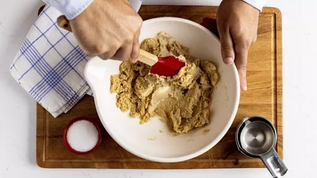
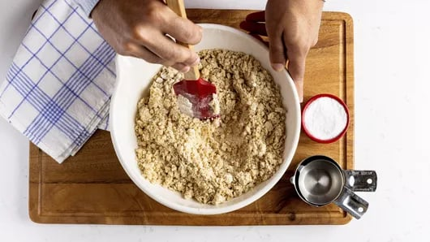
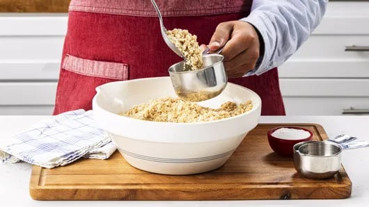
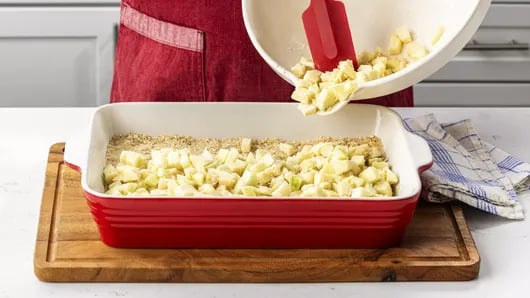
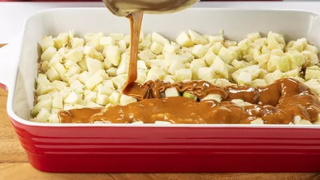
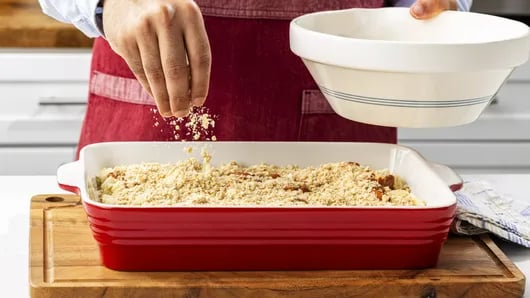
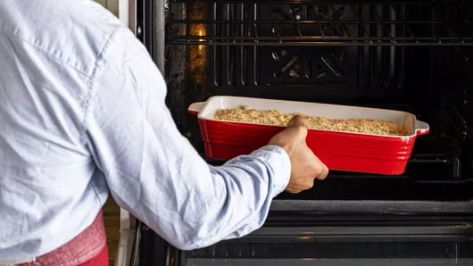

This delightful Caramel Apple Bars recipe pairs two fall favorites:
it’s a combination of apple crisp and caramel apples, baked into
scrumptiously shareable caramel apple crisp bars. With fresh sliced
apples and melted caramel nestled between two layers of buttery brown
sugar-oat streusel, it’s the perfect fall dessert.
This is one of our favorite fall baking recipes, because it features
classic autumn flavors, it’s a great way to use up apples from an
orchard trip and it only takes 20 minutes of hands-on time. Plus, as
it’s baking, your home will smell sweet, cozy and comforting. What
better way to spend an afternoon as the weather gets cooler outside?
Ingredients
- 1 cup packed brown sugar
- 1/2 cup butter, softened
- 1/4 cup shortening
- 1 3/4 cups plus 3 tablespoons Gold Medal™ All Purpose Flour, divided
- 1 1/2 cups quick-cooking oats
- 1 teaspoon salt
- 1/2 teaspoon baking soda
- 4 1/2 cups coarsely chopped peeled tart apples (3 medium)
- 1 bag (14 oz) caramels, unwrapped
Steps






